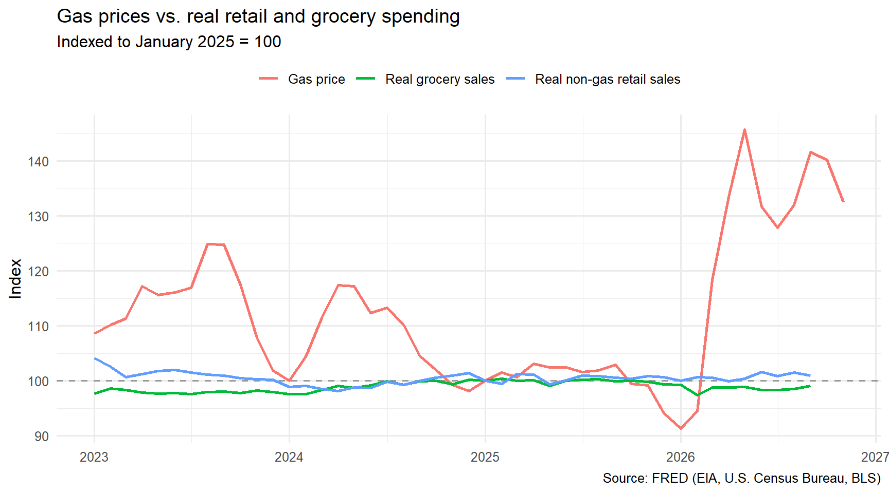
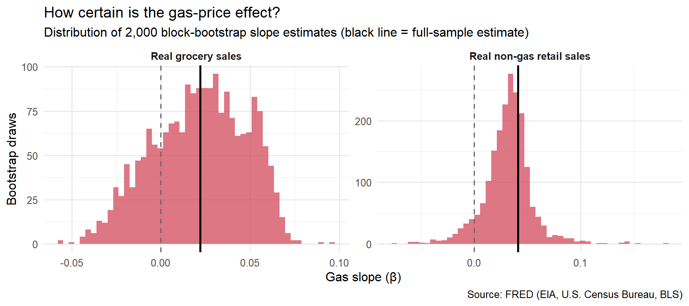

Crude Awakening, SQ1: How Do Oil Price Changes Affect Consumer Behavior in Retail and Grocery?
Author
Noshin Rahman
Background and Motivation
Our team’s overarching question is: How did the 2026 rise in oil prices influence U.S. consumer spending and transportation? Each teammate takes one channel through which an oil shock reaches households: restaurant spending, credit card use, vehicle miles traveled, and public transit ridership. My question covers the largest channel of all: how do oil price changes affect consumer behavior in retail and grocery?
The intuition is simple. Gasoline is a hard-to-avoid expense. Most people still have to drive to work and to the store when prices jump, so every extra dollar spent at the pump is a dollar that can’t be spent somewhere else. If that squeeze is real, it should show up first in retail and grocery, the two biggest categories of everyday spending. Grocery is especially interesting because it is semi-essential: households can trade down (store brands, fewer extras) but cannot stop buying food.
Prior work gives mixed signals. Gelman et al. (2023), using detailed household transaction data, find that gasoline price changes significantly affect how households spend. Aglar (2026) finds that gasoline price shocks in California were associated with reduced retail and food spending. On the other hand, the Kansas City Fed (2021) describes a link between oil prices and consumer spending that has evolved over time, as U.S. oil production roughly doubled over two decades and the economy became less dependent on imported oil. Whether a large shock still bites in 2026 is an open, empirical question.
I approach it in three steps:
Describe how real (inflation-adjusted) retail and grocery spending moved as gas prices rose in 2026.
Benchmark the 2026 episode against the 2022 spike, the most recent comparable shock.
Quantify the relationship with a regression that controls for inflation, using a block bootstrap to measure uncertainty honestly.
Setup
This report is fully reproducible. The first chunk installs any missing packages, and all data are pulled from the FRED API at render time (then cached locally in data/sq1/ so re-renders are fast).
API key: the FRED API needs a free key (https://fred.stlouisfed.org/docs/api/api_key.html). The key is read from the environment variable FRED_API_KEY and is never written in this file. If no key is found, the code falls back to FRED’s public CSV download so it still runs on any machine.
Show code
required_pkgs <-c("tidyverse", "httr2", "lubridate", "scales", "gt")missing_pkgs <-setdiff(required_pkgs, rownames(installed.packages()))if (length(missing_pkgs) >0) install.packages(missing_pkgs)invisible(lapply(required_pkgs, library, character.only =TRUE))theme_set(theme_minimal(base_size =12))DATA_DIR <-file.path("data", "sq1") # relative path, no setwd()START_DATE <-"2021-01-01"# gives the 2022 spike a pre-shock baseline and YoY historydir.create(DATA_DIR, showWarnings =FALSE, recursive =TRUE)
Data Acquisition
Show code
#' Download one FRED series, caching it as a CSV.#'#' @param series_id FRED series ID, e.g. "RSGCS"#' @param start first observation date (YYYY-MM-DD)#' @param refresh TRUE forces a fresh download even if a cached file exists#' @return tibble with columns date, value, series_idget_fred_series <-function(series_id, start = START_DATE, refresh =FALSE) {# Start date is part of the file name, so changing START_DATE triggers a fresh download cache_file <-file.path(DATA_DIR, paste0(series_id, "_", start, ".csv"))if (file.exists(cache_file) &&!refresh) {return(read_csv(cache_file, show_col_types =FALSE)) } api_key <-Sys.getenv("FRED_API_KEY")if (nzchar(api_key)) {# Preferred path: official FRED web API obs <-request("https://api.stlouisfed.org/fred/series/observations") |>req_url_query(series_id = series_id,api_key = api_key,file_type ="json",observation_start = start ) |>req_retry(max_tries =3) |>req_perform() |>resp_body_json() |>pluck("observations") out <-tibble(date =map_chr(obs, "date"),value =map_chr(obs, "value") ) } else {# Fallback: public CSV endpoint (no key needed)message("FRED_API_KEY not set; using public CSV for ", series_id) out <-read_csv(paste0("https://fred.stlouisfed.org/graph/fredgraph.csv?id=", series_id),col_types =cols(.default ="c") )names(out) <-c("date", "value") } out <- out |>mutate(date =as_date(date),value =suppressWarnings(as.numeric(value)), # FRED codes missing as "."series_id = series_id ) |>filter(date >=as_date(start))write_csv(out, cache_file) out}
The series below cover the three pieces of SQ1: the oil and gas price “shock,” grocery spending, and broader retail spending. Restaurant sales (SQ2) and revolving credit (SQ3) are left to teammates to avoid overlap.
Where the data come from. All series are retrieved through FRED, but each originates with a federal statistical agency:
Retail sales come from the U.S. Census Bureau’s Advance Monthly Retail Trade Survey, a sample of retail firms benchmarked to the larger Monthly Retail Trade Survey. Values are monthly, in millions of dollars, seasonally adjusted. The most recent months are advance estimates and get revised as fuller survey data arrive.
Gasoline prices come from the EIA’s weekly survey of retail gasoline stations, reported as a national average price per gallon of regular.
WTI crude is the monthly average spot price of the U.S. benchmark crude.
Consumer prices come from the BLS Consumer Price Index (seasonally adjusted), used here to convert dollar sales into real quantities.
Nominal sales alone would be misleading. If grocery prices rise 5% and grocery sales rise 5%, households bought the same amount of food. Deflating by CPI turns “dollars spent” into “stuff bought,” which is the behavior SQ1 cares about.
Show code
sq1_series <-tribble(~series_id, ~label, ~group,"MCOILWTICO", "WTI crude oil ($/barrel, monthly)", "Energy prices","GASREGW", "Regular gasoline ($/gallon, weekly)", "Energy prices","RSGCS", "Retail sales: grocery stores ($M)", "Spending","RSXFS", "Retail sales: total retail trade ($M)", "Spending","RSGASS", "Retail sales: gasoline stations ($M)", "Spending","RSGMS", "Retail sales: general merchandise ($M)", "Spending","CUSR0000SAF11", "CPI: food at home (SA)", "Prices","CPIAUCSL", "CPI: all items (SA)", "Prices")raw <-map(sq1_series$series_id, get_fred_series) |>list_rbind() |>left_join(sq1_series, by ="series_id")
Data Pipeline at a Glance
Before the details, here is every cleaning and preparation step in order, from raw download to analysis-ready data. Each step is implemented in the code chunks of the sections that follow.
Show code
pipeline_steps <-tribble(~stage, ~step, ~what, ~why,"Acquire", "Pull data from the FRED API", "8 series from Jan 2021 onward; API key read from the environment, with a public CSV fallback", "Reproducible, live access to official data","Acquire", "Cache downloads locally", "Each series saved to data/sq1/, with the start date in the file name", "Fast re-renders; a new date range forces a fresh download","Clean", "Convert missing-value codes", "FRED's \".\" placeholders converted to NA", "Keeps text from breaking numeric calculations","Clean", "Fill the October 2025 CPI gap", "Linear interpolation between Sep and Nov 2025 (shutdown month), interior gaps only, and flagged", "Real spending needs CPI; CPI moves slowly, so the error is small","Transform", "Align frequencies", "Weekly gas prices averaged to monthly", "All series need the same time unit before joining","Transform", "Reshape to one row per month", "Long table pivoted to wide, one column per series", "Simplifies cross-series calculations","Transform", "Build non-gas retail", "Total retail sales minus gasoline station sales", "Stops pump prices from inflating \"retail\" mechanically","Transform", "Adjust for inflation", "Grocery deflated by food-at-home CPI; non-gas retail by headline CPI", "Measures quantity bought, not dollars spent","Transform", "Year-over-year changes", "Percent change versus the same month a year earlier", "Removes seasonality; feeds the regression","Check", "Coverage and quality table", "First/last month, months observed, missing and repeated values per series", "Catches gaps and duplicated months","Check", "Data-driven episode definitions", "Peak = highest gas month in the year; baseline = cheapest month in the 6 months before", "Avoids picking dates by eye","Known issue", "Preliminary recent months", "Latest retail figures are Census advance estimates, revised later", "Newest results could still move")pipeline_steps |>mutate(n =row_number(), .before =1) |>gt(groupname_col ="stage") |>cols_label(n ="#", step ="Step", what ="What was done", why ="Why it matters") |>cols_width(n ~px(40), step ~px(200), what ~px(330), why ~px(260)) |>tab_style(style =cell_text(weight ="bold"),locations =cells_row_groups() ) |>tab_style(style =cell_fill(color ="#FDECEE"),locations =cells_body(rows = stage =="Known issue") ) |>tab_header(title ="SQ1 data cleaning and preparation pipeline") |>tab_options(table.font.size =px(13), row_group.background.color ="#F3F3F3")
SQ1 data cleaning and preparation pipeline
#
Step
What was done
Why it matters
Acquire
1
Pull data from the FRED API
8 series from Jan 2021 onward; API key read from the environment, with a public CSV fallback
Reproducible, live access to official data
2
Cache downloads locally
Each series saved to data/sq1/, with the start date in the file name
Fast re-renders; a new date range forces a fresh download
Clean
3
Convert missing-value codes
FRED's "." placeholders converted to NA
Keeps text from breaking numeric calculations
4
Fill the October 2025 CPI gap
Linear interpolation between Sep and Nov 2025 (shutdown month), interior gaps only, and flagged
Real spending needs CPI; CPI moves slowly, so the error is small
Transform
5
Align frequencies
Weekly gas prices averaged to monthly
All series need the same time unit before joining
6
Reshape to one row per month
Long table pivoted to wide, one column per series
Simplifies cross-series calculations
7
Build non-gas retail
Total retail sales minus gasoline station sales
Stops pump prices from inflating "retail" mechanically
8
Adjust for inflation
Grocery deflated by food-at-home CPI; non-gas retail by headline CPI
Measures quantity bought, not dollars spent
9
Year-over-year changes
Percent change versus the same month a year earlier
Removes seasonality; feeds the regression
Check
10
Coverage and quality table
First/last month, months observed, missing and repeated values per series
Catches gaps and duplicated months
11
Data-driven episode definitions
Peak = highest gas month in the year; baseline = cheapest month in the 6 months before
Avoids picking dates by eye
Known issue
12
Preliminary recent months
Latest retail figures are Census advance estimates, revised later
Newest results could still move
Data Preparation
Gasoline prices are weekly, everything else is monthly, so weekly prices are averaged to months before joining.
BLS did not publish CPI for October 2025 because of the federal government shutdown. Without CPI, real (inflation-adjusted) spending can’t be computed for that month, so the gap is filled by linear interpolation between September and November 2025. CPI moves slowly month to month, so this introduces very little error. Only interior gaps are filled: months after the latest CPI release stay missing rather than being extrapolated.
Show code
#' Linearly interpolate interior gaps in a monthly series (no extrapolation).interp_monthly <-function(x, month) {approx(as.numeric(month), x, xout =as.numeric(month), rule =1)$y}monthly_long <- raw |>mutate(month =floor_date(date, "month")) |>group_by(series_id, label, group, month) |>summarize(n_obs =sum(!is.na(value)),value =mean(value, na.rm =TRUE),.groups ="drop" )sq1 <- monthly_long |>select(month, series_id, value) |>pivot_wider(names_from = series_id, values_from = value) |>arrange(month) |>mutate(# Flag months where CPI was filled in, then fill interior gapscpi_interpolated =is.na(CPIAUCSL) & month <max(month[!is.na(CPIAUCSL)]),across(c(CPIAUCSL, CUSR0000SAF11), ~interp_monthly(.x, month)) ) |>mutate(# Retail spending excluding gas stations, so higher pump prices# don't mechanically inflate "retail"nongas_retail = RSXFS - RSGASS,gas_share_retail = RSGASS / RSXFS,# Real (inflation-adjusted) spending, index base = CPI unitsreal_grocery = RSGCS / CUSR0000SAF11 *100,real_nongas_retail = nongas_retail / CPIAUCSL *100,# Year-over-year % changes (strip out seasonality)across(c(GASREGW, MCOILWTICO, real_grocery, real_nongas_retail, RSGMS),~ .x /lag(.x, 12) -1,.names ="{.col}_yoy" ) )
sq1 |>filter(month >=as_date("2023-01-01")) |>select(month, GASREGW, real_grocery, real_nongas_retail) |>pivot_longer(-month) |>group_by(name) |>mutate(index = value / value[month ==as_date("2025-01-01")] *100) |>ungroup() |>mutate(name =recode( name,GASREGW ="Gas price",real_grocery ="Real grocery sales",real_nongas_retail ="Real non-gas retail sales" )) |>ggplot(aes(month, index, color = name)) +geom_hline(yintercept =100, linetype ="dashed", color ="grey60") +geom_line(linewidth =1) +labs(title ="Gas prices vs. real retail and grocery spending",subtitle ="Indexed to January 2025 = 100",x =NULL, y ="Index", color =NULL,caption ="Source: FRED (EIA, U.S. Census Bureau, BLS)" ) +theme(legend.position ="top")

The first look already hints at the answer. Gas prices swing widely, with a modest bump in 2023 to 2024 and a sharp spike in spring 2026, while both real spending lines stay within a few percent of their January 2025 level throughout. Visually, there is no obvious mirror image where spending dips whenever gas spikes. The rest of the report tests whether that impression holds up.
Show code
sq1 |>filter(cpi_interpolated) |>select(month, CPIAUCSL, CUSR0000SAF11) |>gt() |>fmt_date(month, date_style ="yMMM") |>fmt_number(c(CPIAUCSL, CUSR0000SAF11), decimals =1) |>cols_label(month ="Month", CPIAUCSL ="CPI: all items",CUSR0000SAF11 ="CPI: food at home") |>tab_header(title ="Interpolated CPI values",subtitle ="Not published due to the October 2025 government shutdown")
Interpolated CPI values
Not published due to the October 2025 government shutdown
Month
CPI: all items
CPI: food at home
Oct 2025
324.6
315.3
Two Oil Shocks: 2022 vs. 2026
The 2022 spike, driven by Russia’s invasion of Ukraine, is a natural benchmark for 2026. Lining the two episodes up on a common clock shows whether consumers reacted differently this time.
Defining each episode. Rather than picking dates by eye, each episode is defined from the data: the peak is the month with the highest gas price in that calendar year, and the baseline is the lowest-priced month in the six months before the peak (the “calm before the shock”). Every series is then indexed to its baseline month = 100, and time is measured in months since baseline.
Show code
#' Locate an oil-shock episode in a given year.#'#' @param data monthly data with columns month and GASREGW#' @param yr calendar year containing the spike#' @param lookback months before the peak to search for the baseline#' @return one-row tibble: episode, baseline, peakfind_episode <-function(data, yr, lookback =6) { peak <- data |>filter(year(month) == yr, !is.na(GASREGW)) |>slice_max(GASREGW, n =1, with_ties =FALSE) |>pull(month) baseline <- data |>filter(month < peak, month >= peak %m-%months(lookback), !is.na(GASREGW)) |>slice_min(GASREGW, n =1, with_ties =FALSE) |>pull(month)tibble(episode =paste(yr, "spike"), baseline = baseline, peak = peak)}#' Whole months from `from` to `to` (negative if `to` is earlier).months_between <-function(from, to) { (year(to) -year(from)) *12+ (month(to) -month(from))}episodes <-map(c(2022, 2026), \(y) find_episode(sq1, y)) |>list_rbind()measure_labels <-c(GASREGW ="Gas price",real_grocery ="Real grocery sales",real_nongas_retail ="Real non-gas retail sales")event_data <- episodes |>cross_join(sq1 |>select(month, all_of(names(measure_labels)))) |>mutate(event_month =months_between(baseline, month),peak_month =months_between(baseline, peak) ) |>filter(between(event_month, -3, 9)) |>pivot_longer(all_of(names(measure_labels)), names_to ="measure") |>group_by(episode, measure) |>mutate(index = value / value[event_month ==0] *100) |>ungroup() |>mutate(measure =factor(measure_labels[measure], levels = measure_labels))episodes |>mutate(months_to_peak =months_between(baseline, peak)) |>gt() |>fmt_date(c(baseline, peak), date_style ="yMMM") |>cols_label(episode ="Episode", baseline ="Baseline month",peak ="Peak month", months_to_peak ="Months to peak") |>tab_header(title ="Oil-shock episodes identified from gas prices")
Oil-shock episodes identified from gas prices
Episode
Baseline month
Peak month
Months to peak
2022 spike
Dec 2021
Jun 2022
6
2026 spike
Jan 2026
May 2026
4
Show code
ggplot(event_data, aes(event_month, index, color = episode)) +geom_hline(yintercept =100, linetype ="dashed", color ="grey60") +geom_vline(xintercept =0, color ="grey80") +geom_line(linewidth =1, na.rm =TRUE) +geom_point(size =1.4, na.rm =TRUE) +facet_wrap(~ measure, scales ="free_y") +scale_color_manual(values =c("2022 spike"="#8C8C8C", "2026 spike"="#D1495B")) +scale_x_continuous(breaks =seq(-3, 9, 3)) +labs(title ="Same shock, same response? Spending around the 2022 and 2026 gas spikes",subtitle ="Each series indexed to its pre-shock baseline month = 100",x ="Months since baseline", y ="Index (baseline = 100)", color =NULL,caption ="Source: FRED (EIA, U.S. Census Bureau, BLS). Real sales deflated by CPI." ) +theme(legend.position ="top", strip.text =element_text(face ="bold"))
Three patterns stand out. First, the 2026 shock was the larger of the two: gas prices peaked +59.5% above their pre-shock baseline, compared with +49.1% in 2022. Second, despite the bigger shock, grocery spending held up better. Three months after the peak, real grocery sales were -0.7% from baseline in 2026, versus -4.6% in 2022. Third, real non-gas retail barely moved in either episode (-0.2% in 2022 and +1.5% in 2026, three months after the peak).
The 2022 grocery decline needs a careful reading. Food-at-home prices were rising 12.3% year over year at the 2022 gas peak, compared with 2.7% at the 2026 peak. Real grocery sales fall whenever grocery prices outpace dollar spending, whether or not gas is involved. The episode view can’t separate the two forces, which motivates the regression below.
How Sensitive Is Spending to Gas Prices?
The episode comparison is descriptive. To put a number (and an uncertainty range) on the relationship, I regress the year-over-year change in real spending on the year-over-year change in gas prices, using every month from 2022 onward.
The slope reads as: for every 1 percentage point faster gas price growth, real spending growth changes by β percentage points. A negative β means higher gas prices crowd out other spending.
Controlling for inflation. Food inflation can differ a lot from one episode to the next, so a raw comparison could mistake grocery price pressure for a gas effect. The grocery model controls for food-at-home CPI inflation, and the retail model controls for headline CPI inflation.
Show code
reg_data <- sq1 |>mutate(food_cpi_yoy = CUSR0000SAF11 /lag(CUSR0000SAF11, 12) -1,cpi_yoy = CPIAUCSL /lag(CPIAUCSL, 12) -1 ) |>select(month, GASREGW_yoy, real_grocery_yoy, real_nongas_retail_yoy, food_cpi_yoy, cpi_yoy) |>drop_na()models <-tibble(outcome =c("Real grocery sales", "Real non-gas retail sales"),formula =list( real_grocery_yoy ~ GASREGW_yoy + food_cpi_yoy, real_nongas_retail_yoy ~ GASREGW_yoy + cpi_yoy ))#' Fit every model in `models` and return the gas-price slope for each.fit_gas_slopes <-function(d) { models |>mutate(gas_slope =map_dbl(formula, \(f) coef(lm(f, data = d))[["GASREGW_yoy"]])) |>select(outcome, gas_slope)}point_estimates <-fit_gas_slopes(reg_data)
Why a block bootstrap? Standard regression confidence intervals assume each month is independent, but economic data are autocorrelated: this month looks a lot like last month. Resampling individual months would break that structure and make the estimates look more precise than they really are. A moving block bootstrap instead resamples consecutive 6-month blocks, keeping short-run dynamics intact. I draw 2,000 bootstrap samples and refit both models on each.
Show code
#' Draw one moving-block bootstrap sample of the rows of `d`.#'#' @param d data frame ordered in time#' @param block_len length of each resampled block (months)block_bootstrap_sample <-function(d, block_len =6) { n <-nrow(d) n_blocks <-ceiling(n / block_len) starts <-sample(seq_len(n - block_len +1), n_blocks, replace =TRUE) idx <-as.vector(outer(0:(block_len -1), starts, `+`))[seq_len(n)] d[idx, ]}set.seed(9750)N_BOOT <-2000boot_slopes <-map(seq_len(N_BOOT), \(b) {fit_gas_slopes(block_bootstrap_sample(reg_data)) |>mutate(draw = b)}) |>list_rbind()boot_summary <- boot_slopes |>group_by(outcome) |>summarize(ci_low =quantile(gas_slope, 0.025),ci_high =quantile(gas_slope, 0.975),share_neg =mean(gas_slope <0),.groups ="drop" ) |>left_join(point_estimates, by ="outcome") |>mutate(effect_50 = gas_slope *0.5) |># implied effect of a 50% gas price riserelocate(gas_slope, .after = outcome)
Show code
boot_summary |>gt() |>fmt_number(c(gas_slope, ci_low, ci_high), decimals =3) |>fmt_percent(c(share_neg, effect_50), decimals =1) |>cols_merge(c(ci_low, ci_high), pattern ="[{1}, {2}]") |>cols_label(outcome ="",gas_slope ="Gas slope (β)",ci_low ="95% block-bootstrap CI",share_neg ="Share of draws below 0",effect_50 ="Implied effect of a 50% gas rise" ) |>tab_header(title ="Sensitivity of real spending growth to gas price growth",subtitle ="Monthly YoY changes, 2022 onward; 2,000 moving-block bootstrap draws" ) |>tab_footnote("Grocery model controls for food-at-home CPI inflation; retail model controls for headline CPI inflation.")
Sensitivity of real spending growth to gas price growth
Monthly YoY changes, 2022 onward; 2,000 moving-block bootstrap draws
Gas slope (β)
95% block-bootstrap CI
Share of draws below 0
Implied effect of a 50% gas rise
Real grocery sales
0.022
[−0.029, 0.063]
22.1%
1.1%
Real non-gas retail sales
0.041
[−0.017, 0.081]
7.3%
2.1%
Grocery model controls for food-at-home CPI inflation; retail model controls for headline CPI inflation.
Show code
ggplot(boot_slopes, aes(gas_slope)) +geom_histogram(bins =50, fill ="#D1495B", alpha =0.75) +geom_vline(xintercept =0, linetype ="dashed", color ="grey40") +geom_vline(data = point_estimates, aes(xintercept = gas_slope),linewidth =1, color ="black") +facet_wrap(~ outcome, scales ="free") +labs(title ="How certain is the gas-price effect?",subtitle ="Distribution of 2,000 block-bootstrap slope estimates (black line = full-sample estimate)",x ="Gas slope (β)", y ="Bootstrap draws",caption ="Source: FRED (EIA, U.S. Census Bureau, BLS)" ) +theme(strip.text =element_text(face ="bold"))

Reading the results. For grocery, the gas slope is 0.022, with a 95% interval of [-0.029, 0.063]. For non-gas retail, it is 0.041 [-0.017, 0.081]. Both intervals include zero. In plain terms: once inflation is accounted for, months with faster gas price growth did not have measurably weaker real retail or grocery spending. Taken at face value, a 50% rise in gas prices implies a change of +1.1% in real grocery growth and +2.1% in real non-gas retail growth, and the uncertainty is wide enough that “no effect” remains entirely plausible.
If anything, the estimates lean slightly positive, especially for retail, where 92.6% of bootstrap draws fall above zero. I don’t read that as gas prices boosting spending. A more plausible story is a shared driver: when the economy runs hot, demand for gasoline and demand for goods rise together, pushing gas prices and retail sales in the same direction. This model controls for inflation but not for the business cycle, so it can’t rule out that confounding.
Limitations
Several features of the data and design limit how far these results can be pushed:
National totals hide who is cutting back. The studies that find clear spending cuts, such as Gelman et al. (2023) and Aglar (2026), work with household-level or state-level data. A national total can stay flat even if lower-income households cut grocery trips while higher-income households barely notice the pump. My null result is about the average consumer, not every consumer.
Correlation, not causation. Gas prices are not randomly assigned. They rise when global demand is strong, which is also when U.S. spending tends to be strong. Without a business-cycle control or a natural experiment, the slope mixes the true crowd-out effect with that shared upswing.
A short, still-unfolding sample. The regression rests on roughly 57 monthly observations, and the 2026 aftermath is only partly observed. Recent retail figures are advance estimates that will be revised, so the latest months could still move.
Measurement choices. October 2025 CPI is interpolated, not observed. Non-gas retail is deflated by headline CPI, which includes energy prices and slightly overstates the price growth of non-energy goods. The episode rule (lowest gas price in the six months before the peak) is a reasonable convention, but a different window would shift the baselines somewhat.
Conclusion: What SQ1 Means for the Overarching Question
The 2026 oil shock was large: gas prices rose more than in 2022, the most recent comparable episode. Yet at the national level, I find no measurable crowd-out of real retail or grocery spending. Grocery spending dipped briefly and recovered, non-gas retail barely moved, and once inflation is controlled for, the relationship between gas price growth and real spending growth is statistically indistinguishable from zero. The steep grocery decline in 2022 looks more like a food inflation story than a gas story.
For the team’s overarching question, this result is useful precisely because it rules out the most obvious channel. If households paid substantially more for gas without buying less at stores, the money had to come from somewhere, and the other specific questions test where: cutting back on dining out (SQ2), financing the gap with credit cards (SQ3), or adjusting how much they drive and whether they switch to transit (SQ4 and SQ5). SQ1 establishes the baseline: in 2026, the average American consumer absorbed the pump shock without visibly pulling back on everyday retail and grocery purchases.
Future Work
With more time, I would extend this analysis in four directions:
Go below the national level. State retail sales or card-spending data broken out by income would show whether the flat national total masks real cutbacks among lower-income households, which is where prior research finds the strongest effects.
Control for the business cycle. Adding unemployment or real income growth to the regression would help separate true crowd-out from the shared upswing that pushes gas prices and spending up together.
Use a longer history. Including the 2008, 2011, and 2014 oil episodes would show whether consumers have become less sensitive to gas prices over time, directly testing the “evolving link” described by the Kansas City Fed.
Revisit the 2026 aftermath. Once revised retail figures cover a full year after the peak, the episode comparison can be completed rather than cut off partway through.
References
Aglar (2026). Gasoline price shocks and consumer spending: Evidence from household purchases. Working paper.
Federal Reserve Bank of Kansas City (2021). The Evolving Link between Oil Prices and U.S. Consumer Spending.
Gelman, M., et al. (2023). The response of consumer spending to changes in gasoline prices. American Economic Journal: Macroeconomics.
Federal Reserve Bank of St. Louis. FRED, Federal Reserve Economic Data. Series: MCOILWTICO, GASREGW, RSGCS, RSXFS, RSGASS, RSGMS, CUSR0000SAF11, CPIAUCSL.